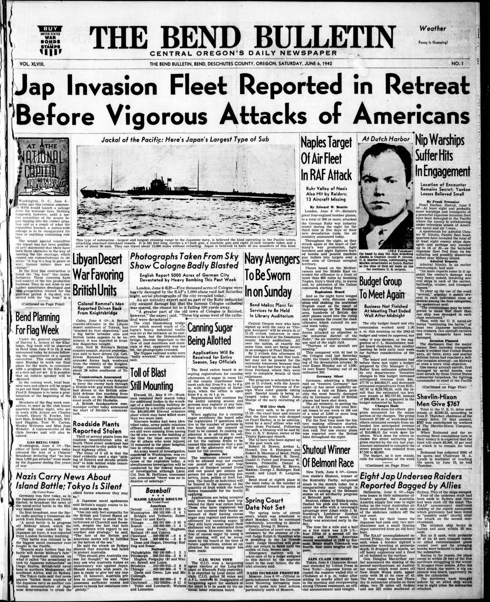
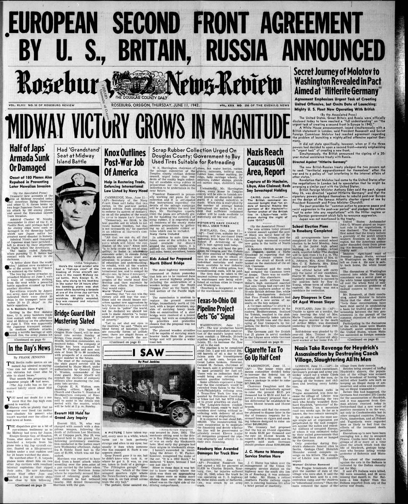
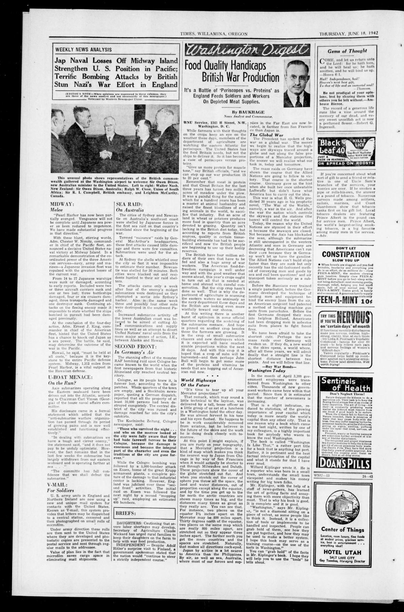

HN HN-532 · June 6, 1942 · War, Conflict & Security > Wars, Battles & Campaigns > Naval battles
Source: Indianapolis Times, p. 1 — original page; Naval History and Heritage Command, Battle of Midway.
Report: The headline said “Midway Fight Costly to Japs†and speculated that eight to eighteen Japanese ships were damaged, while Admiral Nimitz cautiously stated that American control of the Midway area remained secure.
Assessment: In the June 4–7 battle, Japanese forces ultimately lost four fleet carriers and the United States lost Yorktown, among other losses. Eight to eighteen “damaged†ships is a preliminary broad estimate, not the final carrier-sinking count. Intelligence restrictions and a battle still underway limited reporting accuracy.
Authentic scans retrieved from Historic Oregon Newspapers (University of Oregon). Article crops are located using the archive's own ALTO OCR word coordinates and rendered at native crop resolution; page scans are 1,200-pixel-wide renditions. No images were generated, mocked, or retouched.



Not yet acquired. Queued for provider-specific acquisition testing (see source-acquisition manifest).
URL (preserved verbatim): https://newspapers.library.in.gov/?a=d&d=IPT19420606.1.1
Saved research report: Historical_Newspaper_Event_Research_528-552_2026-10-23.md
Evidence note: A newspaper report means a historical publication made a claim; it does not establish that claim as fact. Contemporary reporting is separated from later scholarly context and our own assessment.